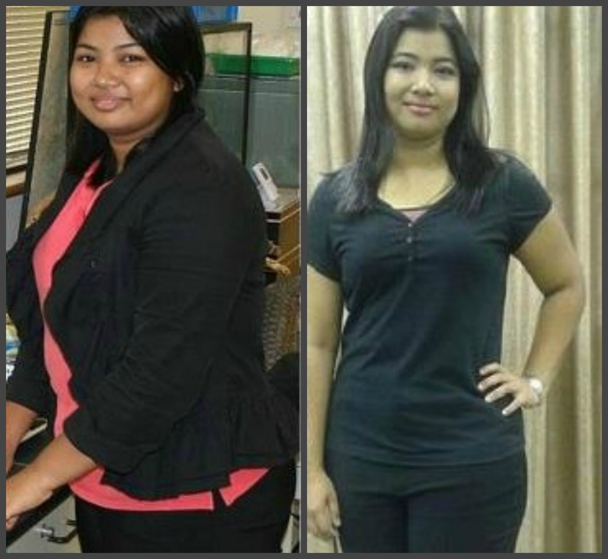
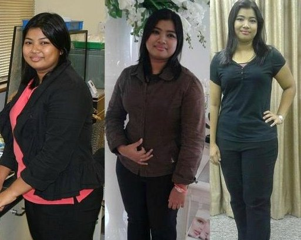

स्पेशल रिपोर्ट: अब पेट की चर्बी को अलविदा कहें - वैज्ञानिकों ने किया मोटापे को लेकर एक बड़ी मिथ्या का खात्मा
संगीता के जबर्दस्त दुबले होने के पीछे का विवाद। ये न्यूज़ वायरल हो रही है - क्या उसने लिमिट पार कर दी?

डॉ अविनाश कुलकर्णी
ने की दुबले होने के इस नायाब केस की पूरी तहीात
संगीता का इंटरव्यू, जो लिया गया था उसके 40 किलो वजन टाने के बाद और जिसके लिए उसने आजमाई थी Tolerance Suppressing Method
संगीता की ही एक सहेली ने उसके अजीबोगरीब 40 किलो वजन टने के टनाक्रम की हर स्टेप पर फोटो खींची, इन फोटो को देखकर हम महसूस कर सकते हैं कि उसके शरीर और उसके आत्म-विश्वास में कितना जबर्दस्त बदलाव आया।
36 साल की संगीता ने Advanced Tolerance Prevention System इस्तेमाल करके अपना वजन 101 किलो कम कर लिया।
बस इस एडवांस फॉर्मूला को नियमित रूप से इस्तेमाल करके संगीता को "लगभग कोई भी एक्सर्साइज़ किए बिना ही" अपना वजन कम करने में सफलता मिली और उसने अपना आत्म-विश्वास भी बढ़ा लिया।
"जब मैंने अपनी प्रोग्रैस की फोटो खींचना शुरू किया था तो मैं अपनी सिर्फ एक ही फोटो लेती थी। मुझे अपनी बॉडी से बड़ी नफरत होती थी।"

संगीता ने अपने शानदार परिवर्तन की पूरी कहानी ऑनलाइन पोस्ट की है और एक उत्साही कमेंटर ने इस पर कमेन्ट की। "जितनी तेजी से संगीता की कमर कम होती जा रही है उसकी मुस्कान उतनी ही बड़ी होती जा रही है।"
"जब मैंने अपनी प्रोग्रैस की फोटो खींचना शुरू किया था तो मैं अपनी सिर्फ एक ही फोटो लेती थी। मुझे अपनी बॉडी से बड़ी नफरत होती थी।" संगीता लिखती हैं। "मेरा आत्म-विश्वास इतना कम हो गया था कि मैं सोचती ही नहीं थी कि मुझे कभी सफलता मिलेगी। एक बार मैंने एक मैगज़ीन में एक लेख पढ़ा। उस लेख में tolerance effect (सहनशीलता) की बात हो रही थी और एक ऐसे प्रोडक्ट के बारे में बताया गया था जो शोध में काफी सफल बताया गया था। इसका खुलासा एक शोधकर्ता ने इंटरव्यू के दौरान किया था। उस शोधकर्ता ने सीधे कहा था कि ही एक ऐसा प्रोडक्ट है जिसका असर कम नहीं होता और जो जितना ज़्यादा लिया जाता है उतना अच्छा होता है। मेरे ख्याल से चर्चित tolerance suppression (सहनशीलता प्रभाव) यही होता है...
सिर्फ संगीता की सफलता के बारे में ही नहीं, कई लोग ये सवाल भी पूछते हैं कि आखिर वजन कैसे कम कर देती है। वजन कम करने वाले अधिकतर प्रोडक्ट दावा करते हैं कि उनमें वसा जलाने वाले सीक्रेट पदार्थ हैं जबकि वजन टाने का असली सीक्रेट है, वसा जलाने वाले और शरीर से जहर बाहर के देने वाले अनोखे पदार्थों का सही डोज़ और मिश्रण लेना और यह सुनिश्चित करना कि आखिर इन पदार्थों को आपका शरीर कितनी अच्छी तरह से सोखता है।
के क्रांतिकारी Tolerance Prevention System की खोज अनुभवी पोषण विशेषज्ञों, एंडोक्राइनोलॉजिस्ट्स और हैल्थ और ब्यूटी के विशेषज्ञों की एक टीम ने की थी। उनकी रिसर्च ने दिखाया कि कैसे किसी भी वजन कम करने के प्रोडक्ट का असर बने रहने के लिए मानव शरीर को वजन कम करने के फॉर्मूलों के पदार्थों को भी बदल-बदल कर लेना चाहिए। का प्रगतिशील तीन चरणों का सिस्टम हर चरण में अनोखे ग्लूटेन मुक्त, नॉन-जीएमओ और ऑर्गेनिक पदार्थों से मिलकर बने कंपाउंड उपयोग करता है। उत्पादक का कहना है " से दुनिया भर में लाखों लोग फायदा ले चुके हैं और सफलतापूर्वक वजन टाकर अपने जीवन में खुशियाँ और संतुष्टि वापस ले आए हैं"
हमें इससे बहुत उम्मीद नहीं थी लेकिन हम खुद पता करना चाहते थे कि क्या ये प्रोडक्ट वाकई में वो सब कर सकता था जिसका ये दावा करता था ... अधिकतर लोग जो सफल हुए थे वे यही कहते ते कि की तीनों चरणों के इस्तेमाल से वजन सबसे ज़्यादा कम होता है। इन तीनों फॉर्मूला को मिला कर लेने का विचार तब सामने आया जब शोधों से ये पता चला कि जो लोग नियमित रूप से सप्लिमेंट या दवाइयाँ लेते हैं उनमें एक tolerance (या सहनशीलता) विकसित हो जाती है (यदि उस पदार्थ को 30 दिन या अधिक तक इस्तेमाल किया जाए तो) और फिर असर कम हो जाता है।
वजन कम करने वाले प्रोडक्ट्स में Tolerance या सहनशीलता बढ़ना
प्रभावशीलता (चर्बी जलाना+भूख पर नियंत्रण)
पाउंड
सहनशीलता ब्रेक पॉइंट "0"
सहनशीलता और प्रभावशीलता बिल्कुल आईने में एक दूसरे
की तस्वीर की तरह उल्टे हैं। जैसे जैसे सहनशीलता बढ़ती जाती है, प्रभावशीलता उतनी ही कम होती
जाती है।
दिन
टाया हुआ वजन (पाउंड) सहनशीलता प्रभावशीलता
शारीरिक सहनशीलता तब आ जाती है जब कोई भी व्यक्ति
बार-बार किसी पदार्थ को लेता है जिससे उसके शरीर में एक प्रतिरोध विकसित हो जाता है, इससे पदार्थ
ठीक जगह पहुँच ही नहीं पाता। ऐसा आम तौर पर इसलिए होता है क्योंकि हमारा शरीर दवाई या सप्लिमेंट को
पचाने के लिए जरूरी एंजाइम्स ज़्यादा बनाने लगता है। सहनशीलता पर और शोध करने के बाद रिसर्च टीम ने
निर्णय लिया कि वे को ही उपयोग करके
देखेंगे, यही मार्केट में वो प्रोडक्ट था जो शोध की आवश्यकताओं को पूरा कर रहा था।
//स्त्रोत: “साइन्स ऑफ न्यूट्रिशन - मैगज़ीन” //
कमेन्ट करें
कृपया अपनी कमेन्ट में अश्लीलता, अपशब्दों और धार्मिक कट्टरता से संबंधी ऐसी चीजें पोस्ट न करें जिनसे किसी की भावना को ठेस पहुँच सकती हो, ऐसे कमेंट्स पोस्ट करने पर न सिर्फ कमेन्ट को तुरंत डिलीट कर दिया जाएगा बल्कि पोस्ट करने वाले यूजर को भी हमेशा के लिए बैन कर दिया जाएगा।
* सिर्फ रजिस्टर्ड यूजर ही कमेन्ट कर सकते हैं। लॉगिन करें
कमेंट्स
अनूप गुप्ता द्वारा पोस्ट
क्या बात है संगीताजी। आप बहुत अच्छी दिखने लगी हैं!!!
नम्रता शर्मा का रिप्लाई
वाकई में आप बहुत सुंदर दिखने लगी हैं, मैं इस प्रोडक्ट को कहाँ से ऑर्डर कर सकती हूँ?
रितु का रिप्लाई
मैं और मेरी सहेलियाँ बस बात ही कर रहे थे कि कब ये एडवांस्ड फॉर्मूला न्यूज़ में आएगा। हमारे ग्रुप में से कम से कम 5 लोगों ने इस नुस्खे को इस्तेमाल करके वजन कम किया है। ये चीज वाकई में जोरदार है और इसने हमारी दुनिया बदल कर रख दी।
आरती द्वारा पोस्ट
मैंने इन प्रोडक्ट्स को एक टीवी प्रोग्राम पर देखा था जिसका नाम था 'सितारों के दुबलेपन का राज'। मुझे कहना ही पड़ेगा... ये प्रोडक्ट जबर्दस्त है और मेरे रिज़ल्ट कल्पना से परे हैं। इस लेख को पोस्ट करने के लिए और टेस्ट करवाने के लिए धन्यवाद।
पूनम द्वारा पोस्ट
मैं वजन कम करने के बारे में सोच रही हूँ और 2 महीनों से टाल रही हूँ। आज मैंने फैसला कर लिया है कि शुरू करना ही आज। थैंक्स, पूनम
मोहम्मद द्वारा पोस्ट
मैंने टीवी पर प्रोग्राम देखा और समझ गया कि एड्वान्स्ड तीन चरणों वाला कॉम्बो (3 स्टेज फॉर्मूला) उन लड़कों के लिए काफी असरदार है जो वजन कम करना चाह रहे हैं!!! इससे पहले कि ऑफर का समय निकल जाए, मैं इस ट्रायल ऑफर का फायदा जरूर उठाऊंगा! टिप्स शेयर करने के लिए धन्यवाद और आपको यह भी जरूर बताना चाहिए कि कैसे ये डाइट हम पुरुषों के लिए भी कितनी असरदार है, अगली बारे ये भूलिएगा नहीं। हा हा!
लता द्वारा पोस्ट
आजकल वजन कम करने के सिस्टम में काफी उथल-पुथल मची हुई है। मैं हर जगह इसी चीज की चर्चा सुनती हूँ...मैं इसे एक बार ट्राय करके जरूर देखूँगी। लिंक के लिए धन्यवाद।
दिव्या द्वारा पोस्ट
मेरी बेटी को बचपन से ही मोटापे की समस्या थी और डॉक्टर कहते थे कि हमें उसे डाइटिंग करवानी होगी ताकि वो कम से कम 50 किलो वजन तो कम कर ही ले। मैं उम्मीद करती हूँ कि यही वो चीज है जिससे हमें सफलता मिलेगी। थैंक्स।
रिया द्वारा पोस्ट
मुझे और मेरे पति दोनों को ही वजन कम करना है। मैंने ऑर्डर कर दिया है और हम दोनों साथ में ही इसे ट्राय करेंगे, थैंक्स - गुप्ता परिवार
रजनीश द्वारा पोस्ट
ये चीज बड़ी चर्चा में है। कुछ दिन पहले तो मेरी मम्मी भी अपने ग्रुप में इसी की बात कर रही थीं, उनकी एक सहेली ने 15 दिन में 3 किलो कम कर लिया था। मैं इसको जरूर ट्राय करने जा रहा हूँ, थैंक्स। - सभी पुरुष पाठकों के लिए यह बताना चाहूँगा कि ये डाइट हर किसी के लिए काम करती है, इसलिए इसे ट्राय जरूर करें!
नीता द्वारा पोस्ट
ये चीज वाकई में असरदार है! मेरी बेस्ट सहेली निहारिका ने यही डाइट करके देखी और उसने बहुत वजन कम कर लिया। मैं तो भरोसा ही नहीं कर पा रही थी और मैने खुद इंटरनेट पर काफी रिसर्च करने के बाद ये न्यूज़ आर्टिकल ढूंढ निकाला। थैंक्स!!
मंजुला द्वारा पोस्ट
जब मैंने पहली बार इसके बारे में सुना था तो मुझे विश्वास नहीं हुआ था लेकिन जब मैंने और पढ़ा तो समझ आया कि यही वो एडवांस फॉर्मूला है जो प्रसिद्ध टीवी पर्सनालिटी उपयोग करती हैं और वैज्ञानिक भी इसी ओर इशारा करते हैं। ये वजन कम करने का ऐसा सीक्रेट प्रोडक्ट है जिसके बारे में कोई बताना नहीं चाहता। मुझे कोई आश्चर्य नहीं होगा कि कई बॉलीवुड सितारे भी इसके बारे में जानते हैं। मैं बड़ी खुश हूँ!
वंदना द्वारा पोस्ट
मेरी एक सहेली ने ये डाइट ली और 3 हफ्ते पहले उसी की सलाह पर मैंने भी इसे लिया। मैंने प्रोडक्ट ऑर्डर किया और 3 दिन के अंदर ही डेलीवरी हो गई (वैसे मुझे डेलीवरी चार्ज पर डिस्काउंट नहीं मिला था)। इसके नतीजे शानदार रहे हैं और मैं तीसरे और चौथे हफ्ते के नतीजों का बड़ी उत्सुकता से इंतज़ार कर रही हूँ।
श्वेता द्वारा पोस्ट
ये एक शानदार और क्रांतिकारी प्रोडक्ट है। मेरा रिज़ल्ट जानते हैं क्या है?, एक महीने में ही स्टेज दो पर 8 किलो!
समीरा द्वारा पोस्ट
मैं इस डाइट का पूरा समर्थन करती हूँ। मैंने एक महीने पहले इस डाइट को ट्राय किया था और इसके नतीजों से बड़ी संतुष्ट हूँ। इस डाइट से मैंने पूरे प्रोग्राम के दौरान 13 किलो कम कर लिया और इससे मेरी लाइफ बदल गई। मैं हर उस शख्स को ये डाइट लेने की सलाह दूँगी जो चर्बी टाना चाहता है।